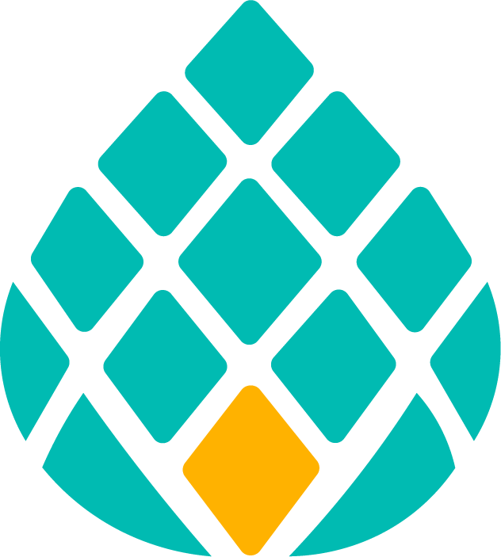

Most software for advice firms is built by technologists looking in from the outside. Bunya is built from an understanding of how the work actually moves through a practice — the reviews, the jobs, the revenue, the compliance — and what it costs when all of it runs on people remembering to do it.
Why we exist
For as long as anyone can remember, an advice firm grew one way: by adding people. More clients meant more advisers, associates and admin — so the firm's ceiling was set by how many people it could hire and hold.
That model is breaking. Demand for advice has never been higher, and the number of advisers has stopped growing. Firms are being asked to serve more people, to a higher standard, with tighter compliance — and the old answer, "hire someone," no longer works when the people aren't there and every hire adds cost and management load.
We started Bunya because we kept seeing the same thing: good firms capped not by ambition or demand, but by how much work their people could physically carry. The tools they had — a CRM here, a dozen point solutions around it, spreadsheets filling the gaps — sped up individual tasks but never carried the work. So growth stayed tied to headcount.
The shift we're built for
The firms that thrive from here won't be the ones that hire fastest. They'll be the ones whose systems do the production — so more clients don't mean proportionally more staff.
What we believe
Everything is built in your own Microsoft 365 and licensed to you perpetually. We'd rather earn ongoing support by being useful than lock you in by holding the switch. Rented software stops the day you stop paying; an owned system is an asset.
The system removes the manual production step in front of advice, compliance and client care — but never the human judgement or accountability behind them. Every meaningful action is shown, and approved, before it counts.
Your processes are a competitive asset. We build the system around how your firm actually works, rather than bending your firm to fit a product. The result is one system that fits, not ten that almost do.
We'd rather build a working model of your practice on your real data than talk you through a demo of someone else's. The proof is the thing running — which is why we show it before you commit.
Who we're for
Bunya is for established and growing Australian advice practices — the firms carrying real client volume, real compliance weight, and real ambition to grow without simply adding people.
If a clean CRM is all you need, there are good ones, and we'll happily say so. We're for the firms that want the reviews, the admin, the advice production, the revenue and the compliance running as one system they own — and, when they're ready, the marketing that grows the practice too.
The hard part is the revenue data — source files are messy, and getting them clean is real work. We flag it at the start of every engagement, because a system that promises automatic reconciliation on dirty data is promising something it can't deliver. We'd rather be honest about the effort than oversell the ease.

See it for yourself
Start with the free 90-second check, or book a demo and we'll walk you through the working system on your own data.